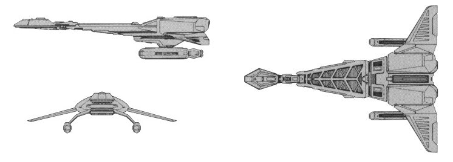

D-14 Stinger-class Destroyer (KE)

Battle Stats
Engines and Superstructure
Total Power Units - 40 (Warp Engines - 2x11, Impulse Engines - 18)
MPR - 5/2
Superstructure - 18
Maximum Warp - 1
Industry Points to Build - 4
Beam Weapons (Disruptors)
Max Power - 6
Firing Chart - T
Arcs - 2F/P/S, 1P/A, 1S/A
Bonuses - +2(1-18)
Missile Weapons (Photon Torpedoes)
Power to Arm - 1
Damage - 10
Firing Chart - H
Arcs - 1F, 1A
Deflector Shields
Max Shield Power - 11
SPR - 1/3